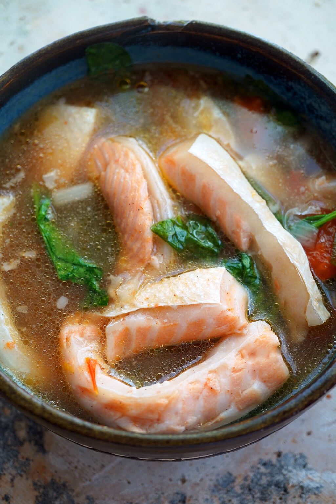

Salmon Sinigang

Description:
Salmon sinigang or Sinigang na Salmon is a soup with sour broth.
Salmon fillet, belly, head, and steaks are viable options to use in this dish however in this recipe we wil use salmon fillet.
Ingredients:
- 1 onion, Chopped
- 3 10g pouches of Sinigang mix
-
1 bunch of kangkong (water spinach) with leaves removed and stalk cut into small pieces
- 6 to 8 pieces okra (lady's fingers)
- 6 ounces Daikon radish
- 2 medium ripe tomato. Sliced into wedges
- 700 g salmon fillet
- 3 tbsp patis (Fish sauce)
- 1/4 tsp ground black pepper
- 4 cups water
Steps
-
Pour water, add tomatoes, radish, and onion in a cooking pot. Let boil
-
Add salmon fillet. Cook for 2 minutes.
-
Add Sinigang mix and stir. Add more sinigang mix until sourness is satisfactory.
-
Put the okra then cover the pot. Cook for medium heat for 2 minutes.
-
Add kangkong stalks. Season with patis and ground black pepper. Cook for 2 to 3 minutes.
-
Add kangkong leaves and turn the heat off.
-
You can let it rest for 5 mins or serve it immediately.
Fun Fact!
The word sinigang comes from the word "sigang", meaning "to stew".
Back to Main Menu